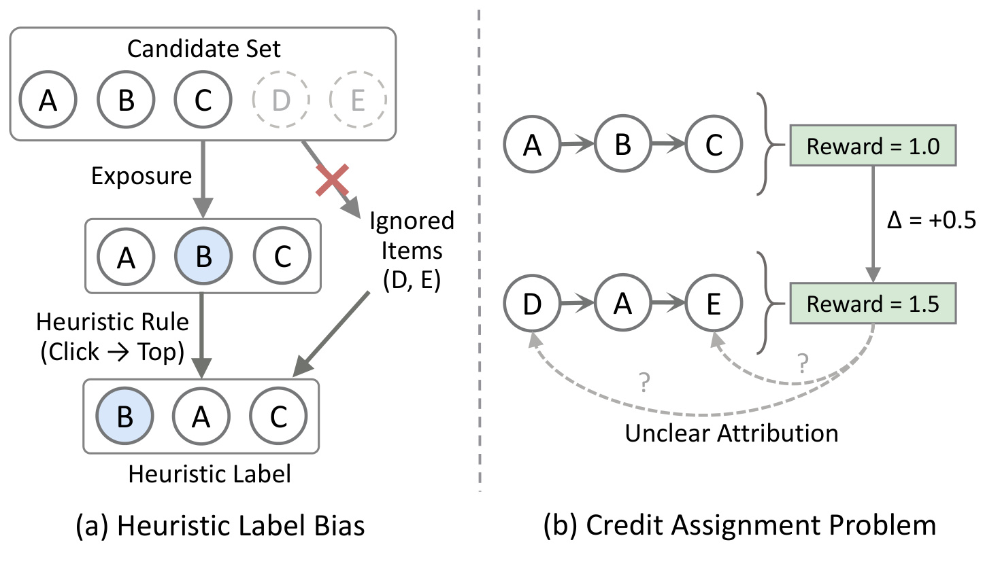
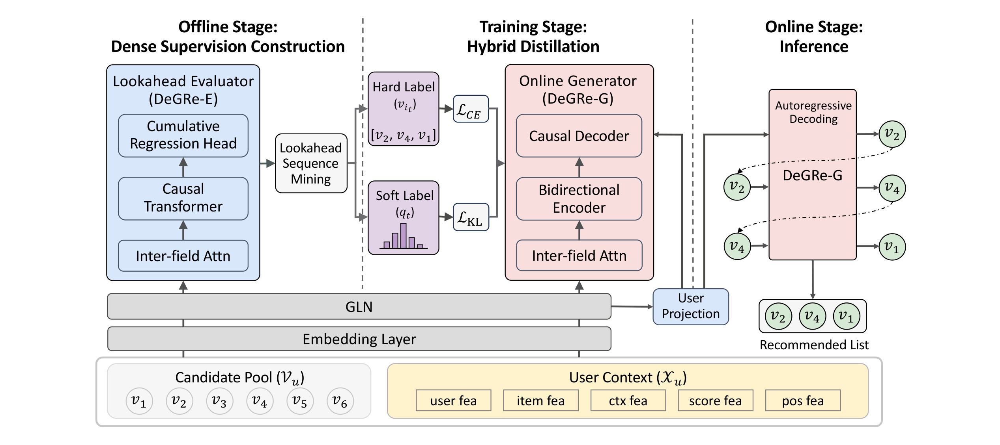
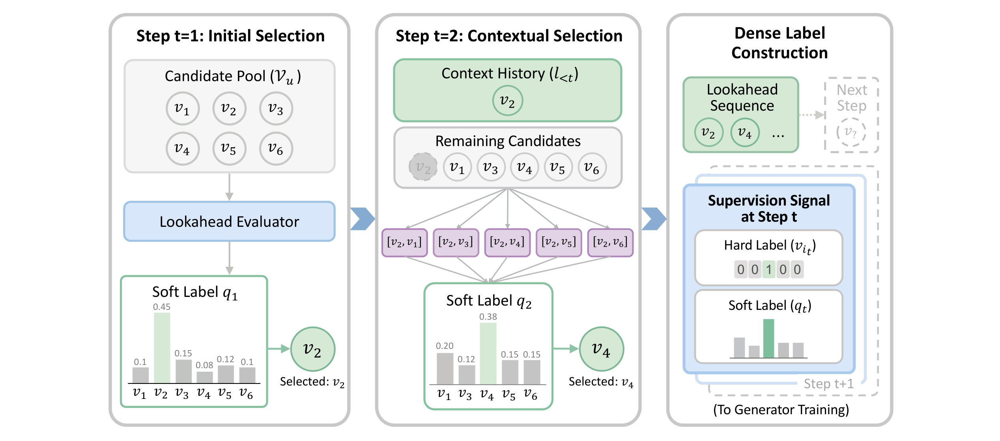
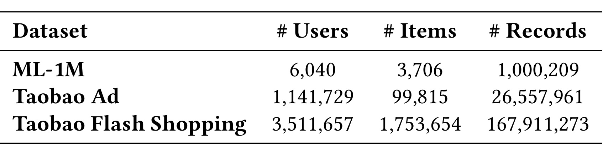
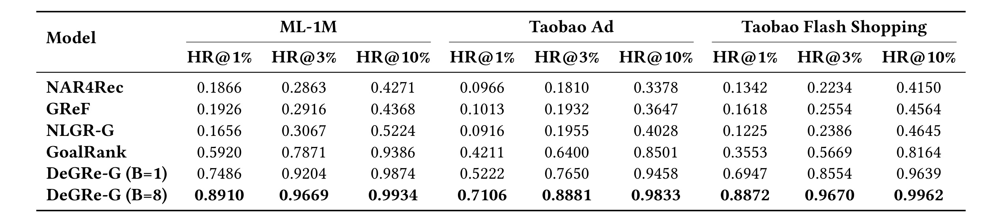
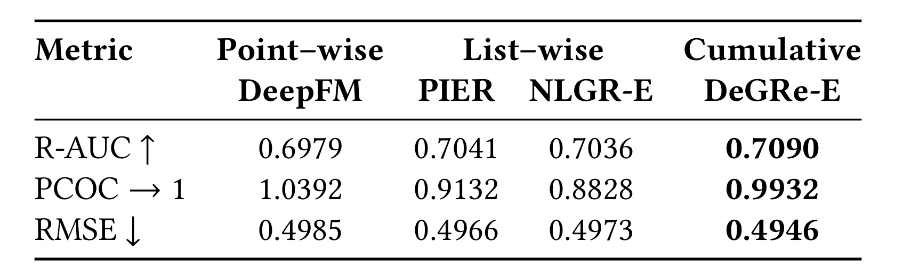
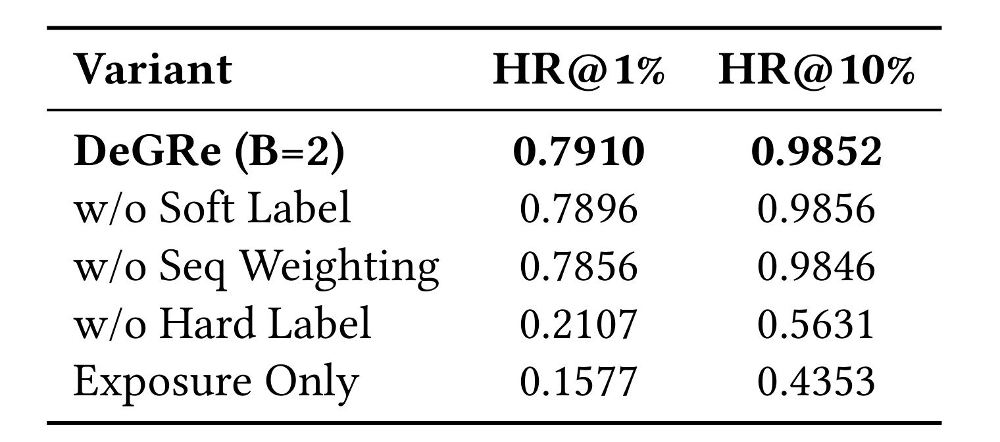
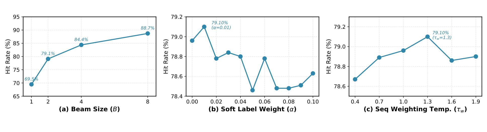
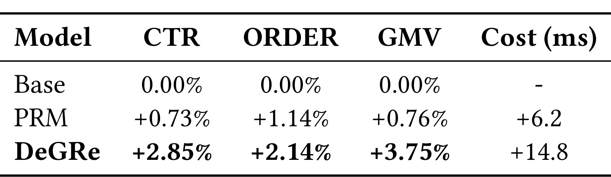
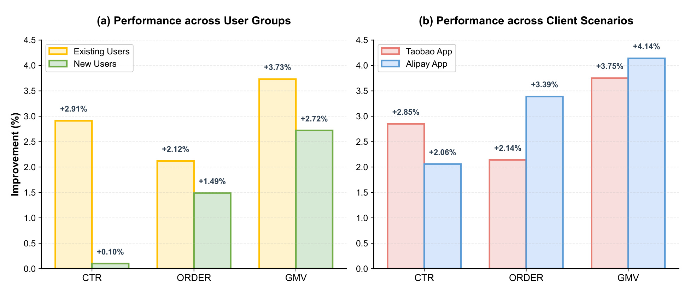

DeGRe 讨论的是推荐系统最后一跳 reranking 如何从“按当前候选打分后再排序”走向“把重排列表作为序列生成问题直接优化”。论文入口为 arXiv:2605.25749v1，论文已标注 KDD 2026 ADS Track accepted，题目为 DeGRe: Dense-supervised Generative Reranking for Recommendation。第一作者 Chaotian Song 的主机构是浙江大学软件学院，作者列表同时包含淘宝闪购 / Alibaba 的 Rajax Network Technology 团队，以及浙江大学 CAD&CG 国家重点实验室等合作机构。PDF 首页和 arXiv API 没有给出独立项目页或 GitHub 仓库，本次记录的代码状态为“未核验到公开代码”。
这篇论文的定位很明确：它不是把大模型直接搬进推荐排序，而是把生成式建模、搜索式探索和蒸馏式在线推理合在推荐重排链路里。作者认为已有生成式 reranking 的主要问题不是“能不能生成一个列表”，而是训练标签来自已曝光列表和简单启发式规则，奖励又常常只在完整列表层面出现，导致模型既不知道未曝光排列里是否存在更高价值组合，也不知道某一步选择到底贡献了多少长期收益。DeGRe 用离线 Lookahead Evaluator 在排列空间里做较重的探索，再把逐步价值估计转成 dense supervision 交给轻量 Online Generator，使线上只保留一次 greedy decoding。
1. 背景和问题
工业推荐通常采用多阶段架构：召回从海量物品中筛出候选，粗排和精排给候选估计点式分数，最后的 reranking 在较短候选列表上重新组织展示顺序。reranking 的价值来自一个简单但容易被低估的事实：用户看到的是一串物品，而不是彼此独立的单点预测。两个单品分别有高点击率，不代表它们相邻展示时仍然能带来最高的点击、订单或 GMV；同类商品扎堆、价格带重复、前后文互相稀释、用户即时意图被前一个曝光改变，都会让列表整体效用偏离单点分数之和。因此，reranking 要处理的是带上下文依赖的组合优化问题。
这也是论文把问题写成 permutation space 的原因。给定用户上下文和候选集合，系统需要从 N 个候选中选出 L 个并确定顺序，可能排列数量随 N 和 L 指数级增长。早期 one-stage reranking 方法，例如 DLCM、PRM 或其他 context-aware scoring 模型，通常先编码初始列表上下文，再输出修正分数并 greedy 排序。这类方法的工程成本低，但存在 evaluation-before-reranking 的结构限制：模型评估的仍是候选在某个已给定上下文中的局部得分，而真正要优化的是重新排列后的列表价值。作者引用已有工作说明，这会让模型容易收敛到局部最优。
随后出现的 generator-evaluator 范式把列表生成和列表评估拆开：generator 采样多个候选序列，evaluator 给完整列表打分，再选择最高价值列表。这个方向能显式搜索排列空间，但线上部署要同时承担生成多个列表和重打分的代价，且 evaluator 的目标是估计 list value，generator 的目标是构造可被 evaluator 选中的序列，两者存在 goal inconsistency。对高吞吐、低延迟的电商首页推荐来说，这类两阶段结构的工程复杂度和延迟都很难无损接受。
近年的生成式 reranking 尝试把生成和评估统一起来，例如 GReF 用 ordered multi-token prediction 让模型一次性预测重排序列，NLGR 和 GoalRank 则把 reward 或 preference signal 引入训练。但 DeGRe 认为这些方法仍有两个核心断点。第一是 heuristic label bias。训练目标往往来自已曝光列表以及“点击物品上移”之类规则，这隐含假设点击项本身就应被置顶，却忽略点击发生时的列表上下文、位置、邻近商品和未曝光候选。被点击的 B 放到 A 前面不一定比未曝光的 D-A-E 组合价值更高；模型如果只拟合这种启发式标签，就会把历史曝光分布中的偏差当作目标分布。
第二是 credit assignment problem。即使引入列表级 reward，例如整体 CTR、订单数或 GMV，奖励通常在完整列表之后才出现。一个 6 个位置的推荐列表最终 GMV 变高，到底是第 1 步选择带来了主贡献，还是第 3 步改变了组合多样性，或者第 5 步避免了重复曝光，很难从单个列表级标量中反推。生成器在自回归产生列表时，每一步都需要局部决策信号；如果只在列表末尾收到稀疏反馈，优化方向会模糊。

Figure 1 把这两个断点画得很直观。左半部分中，候选集合有 A、B、C、D、E，历史曝光只展示了 A、B、C，其中 B 被点击，于是启发式规则把 B 移到最前形成 B-A-C。这个标签没有回答 D、E 这些未曝光物品是否可能组成更优列表，也没有回答 B 的点击是由 B 自身、位置、前后商品还是曝光机会共同造成。右半部分中，A-B-C 的 reward 是 1.0，D-A-E 的 reward 是 1.5，差值 +0.5 只能说明完整序列更好，却无法分配到 D、A、E 的每个局部动作。DeGRe 的设计就是围绕这两处空白展开：先离线探索未曝光空间，再把 evaluator 对每一步的 lookahead value 转成密集监督。
更细一点看，DeGRe 所批评的 heuristic label bias 并不是说点击信号无用，而是说点击信号在 reranking 里天然带有选择性观察。历史日志只记录系统曾经展示过的列表，未被展示的排列没有直接反馈；同一个点击行为又同时受物品吸引力、位置、前序曝光、相邻商品、用户当时需求和上游排序分数影响。若训练样本直接把被点击物品搬到最前，模型会学习“历史系统让用户点到的东西应该更靠前”，而不是学习“给定完整候选集合时，哪一个新列表能带来更大整体收益”。这在重排场景中特别敏感，因为重排的增量空间主要来自组合和顺序，一旦监督标签只覆盖已曝光组合，模型很难主动发现被旧策略压制的替代列表。
credit assignment 的困难也比普通序列推荐更强。序列推荐常常预测下一个物品，目标是让用户继续消费；reranking 则要在一次请求内安排多个位置，且每个位置都可能影响同一轮会话的点击和转化。一个完整列表的 reward 变高，可能是因为第一个物品吸引用户停留，也可能是因为后面几个物品覆盖了不同价格带，还可能只是因为把高转化商品放在更容易被看到的位置。若训练只用列表级 reward，生成器每一步看到的梯度就像把所有局部选择混在一起，难以分辨“当前动作好”还是“后续补救好”。DeGRe 选择 cumulative regression 和 step-wise dense label，本质上是在给每个前缀构造可比较的中间价值，从而把这个模糊问题拆细。
工业部署约束进一步放大了这个问题。重排位于推荐链路末端，上游已经消耗了召回、粗排、精排的计算预算，线上延迟窗口很窄。传统 generator-evaluator 两阶段方案虽然可以搜索更多排列，但如果每个请求都要生成多条候选列表并交给 evaluator 重打分，服务链路会变长，监控、降级和容量规划也更复杂。DeGRe 因此没有试图在线上保留一个强 evaluator，而是把 evaluator 变成训练数据生产器。这种取舍决定了整篇论文的方法形态：离线阶段尽量多探索，训练阶段把探索结果压缩，线上阶段只做确定性生成。
从推荐算法角度看，这篇论文最值得注意的不是“生成式”这个名词，而是它把离线计算预算和线上服务预算做了清晰分工。离线阶段可以承受 beam search 和 evaluator 打分，因为这部分发生在训练数据构造时；线上阶段必须稳定、短路径、低延迟，因此只部署 generator，并且只做一次 greedy decoding。这种分工和很多工业排序系统的现实约束一致：训练阶段可以越来越重，服务阶段的延迟预算却很难大幅增加。论文的后续方法和实验基本都围绕这个 trade-off 展开。
2. 方法
2.1 Problem Formulation：把 reranking 写成列表价值最大化
论文先给出标准的多阶段推荐重排定义。对每个用户请求 u，系统拿到候选集合 (\mathcal{V}u={v_1,v_2,\ldots,v_N}) 和用户上下文特征 (\mathcal{X}_u)。reranking 要从候选集合中选择长度为 L 的不重复序列 (l=[v_u))。论文用点击数作为示例，但后续实验和线上 A/B 也关心订单和 GMV。},v_{i_2},\ldots,v_{i_L}])，目标是最大化整体列表价值 (V(l\mid \mathcal{X
符号解释：(\Pi(\mathcal{V}_u)) 表示从候选集合中选取长度为 L 的所有合法排列，(l^*) 是最优重排列表，(V(\cdot)) 是列表整体效用函数，(\mathcal{X}_u) 是用户和上下文条件。这个公式强调 DeGRe 的优化对象不是单个物品得分，也不是已曝光列表的局部修正，而是在排列空间中寻找能使整体效用最大的序列。
公式 (1) 还有一个容易忽略的边界：(V(l\mid \mathcal{X}_u)) 在论文中并没有被假设为可解析函数，而是由离线 evaluator 学出来的代理价值。也就是说，DeGRe 的最优列表不是通过枚举真实业务函数获得，而是通过“历史反馈训练 evaluator，再用 evaluator 引导搜索，再蒸馏 generator”这个链条近似得到。这个链条中每一环都可能引入误差，因此论文后续必须分别证明 evaluator 有足够排序和校准能力、generator 能学到 evaluator 的搜索偏好、线上业务指标没有被离线代理误导。把这些条件串起来看，公式 (1) 是目标声明，真正的工程实现是一个近似优化系统。
从输入输出角度拆解，Problem Formulation 的输入包括三类信息：候选物品集合、用户上下文以及上游 ranking 分数。输出不是对每个候选打一个独立分，而是长度固定且不重复的有序列表。上游 ranking 分数在这里并未被丢弃，而是作为特征进入 evaluator 和 generator，说明 DeGRe 不是替代前序排序模型，而是在已有 ranking 能力之上学习列表级重组。这个设计对工业系统重要，因为重排模型通常不能从零判断所有商品价值，必须继承上游模型已经学习到的相关性和转化倾向，再补充列表上下文。
这一写法带来两个实现含义。第一，物品之间必须建模互斥和上下文依赖，因为同一个物品不能重复出现在列表里，且某一步已选物品会改变下一步候选的价值。第二，线上不能穷举 (\Pi(\mathcal{V}_u))。论文实验里常用的是从 12 个候选里选 6 个，排列空间约为 (P(12,6)\approx 6.6\times 10^5)，看似不大，但工业首页请求规模和吞吐要求会使逐请求重搜索不可接受。因此 DeGRe 要让重搜索发生在离线构造监督数据时，而不是在线请求时。
2.2 Generative Reranking：自回归生成列表
为了捕捉列表内组合效应，论文把 reranking 转成顺序决策过程。生成器每一步从尚未选择的候选集合中选一个物品，条件包括用户上下文、完整候选集合和前缀列表。根据概率链式分解，生成完整列表的概率为：
符号解释：(P_\theta) 是参数为 (\theta) 的生成器分布，(v_{i_t}) 是第 t 步选择的物品，(l_{<t}) 是已经生成的前缀，(\mathcal{V}u\setminus l) 是尚未选择的候选集合。这个公式把列表价值最大化转成一系列条件动作选择问题，每一步都要决定“在当前前缀下，下一个物品选谁”。
自回归分解还让 DeGRe 可以把“列表生成”映射到类似 pointer network 的选择过程。每一步的动作空间不是固定词表，而是当前请求剩余候选，这比通用文本生成更小、更受约束，也更容易满足不重复输出。与此同时，动作空间会随前缀变化而变化：第 t 步选择一个物品后，第 t+1 步不仅少了一个候选，其他候选的相对价值也会因上下文改变。DeGRe 的 soft label 正是围绕这个动态动作空间构造的，它不是给全局物品 ID 分布打标签，而是在当前前缀和当前剩余候选上定义局部分布。
这也解释了为什么论文不满足于普通 MLE。若用已曝光列表做 teacher forcing，生成器会学习历史策略在每一步选择了什么；但历史策略不一定探索过更优前缀，也不一定反映当前目标函数。若直接用列表 reward 做 policy optimization，又会遇到信号稀疏和方差高的问题。DeGRe 的中间路线是：让 evaluator 离线充当 search oracle，先把更优前缀挖出来，再把这些前缀转成每一步的监督。它不需要线上强化学习，也不要求在线探索用户流量，因此更符合电商推荐系统对稳定性的要求。
这也是 credit assignment 变得困难的地方。若训练只给最终列表一个 reward，生成器很难知道第 t 步的动作是否有利于后续。比如第一个物品选高 CTR 商品可能提升即时点击，但也可能压制后续互补品；第一个物品选中等 CTR 但更能引出后续转化的商品，列表级 GMV 反而更高。公式 (2) 要求每一步都有可学习的局部条件分布，DeGRe 后续的 dense supervision 就是为了给这个局部分布提供更细粒度的目标。
2.3 Cumulative Regression：用阈值概率估计前缀累计价值
在引入完整框架前，论文先解释 cumulative regression。DeGRe 需要估计任意前缀 (l_{1:t}) 的累计价值，例如到第 t 个位置为止已获得的点击数。直接回归一个标量值虽然简单，但对离散点击数这类有序目标不够自然。论文采用 cumulative regression，把“累计价值等于多少”转成一组“累计价值是否至少达到阈值 k”的二分类问题。
符号解释：(V) 是前缀累计价值，(k) 是阈值，(f_k(l_{1:t})) 是模型对第 k 个阈值的 logit，(\sigma) 是 sigmoid 函数。由于 t 个位置最多产生 t 次点击或类似离散收益，阈值只需要从 1 到 t。这个设计把一个离散有序回归任务拆成 t 个有序二分类任务。
随后，前缀的期望累计价值可以由这些阈值概率求和得到：
符号解释：(\mathbb{E}[V\mid l_{1:t}]) 是当前前缀的期望累计价值，求和项是每个阈值被达到的概率。
累计回归在这里比普通分类更贴合点击数等离散收益。假设前缀长度为 4，真实累计点击数为 2，那么标签不是一个单点类别“2”，而是阈值 1 和 2 为真、阈值 3 和 4 为假。模型因此同时学习“至少有一次收益”“至少有两次收益”等有序判断。这样的标签结构保留了价值之间的顺序关系：预测 3 次点击和预测 1 次点击都可能错误，但它们离真实 2 次点击的偏差方向和程度不同。对 beam search 来说，这种有序概率求和产生的期望值比硬类别更容易比较不同前缀。
另一个优点是前缀长度可变。reranking 生成过程中，第 1 步、第 2 步直到第 L 步都需要价值估计。若只训练完整列表 evaluator，它在短前缀上没有直接监督；若为每个长度训练一个独立模型，维护成本又高。累计回归 head 用一个下三角输出矩阵同时覆盖所有长度，使 evaluator 可以在同一网络内对任意 (l_{1:t}) 给出价值分布。这个设计为后续“每一步扩展候选都能打分”提供了结构基础。
这个公式的直觉是，离散非负变量的期望可以写成超过各阈值概率之和。对 DeGRe 来说，它使 evaluator 不必只评价完整列表，而能在每个前缀长度上输出一个可比较的 lookahead value。后续 beam search 扩展候选时，就可以把某个前缀追加一个候选后的期望值作为排序依据。
2.4 The Lookahead Evaluator：离线评估任意前缀的价值分布
DeGRe 的第一个核心组件是 Lookahead Evaluator，记为 (E_\phi)。它是一个基于 Causal Transformer 的 cumulative regression 模型，输入是用户、物品、上下文、排序分数和位置等特征，输出任意前缀的累计价值分布。论文把 evaluator 放在离线阶段使用，它可以较重，因为它不进入线上服务。

Figure 2 展示了 DeGRe 的三段式结构。左侧 Offline Stage 中，DeGRe-E 由 embedding layer、GLN、inter-field attention、causal Transformer 和 cumulative regression head 组成，它负责在候选池上做 lookahead sequence mining。中间 Training Stage 中，离线挖出的序列被拆成 hard label 和 soft label，分别进入交叉熵损失和 KL 对齐损失，用来训练 Online Generator。右侧 Online Stage 中，线上只保留 DeGRe-G，通过 user projection 初始化解码，并自回归 greedy 生成推荐列表。这个图的关键不是模块堆叠，而是 evaluator 和 generator 的职责边界：evaluator 负责离线探索和提供密集信号，generator 负责把这种能力压缩成线上可执行的单次解码。
Lookahead Evaluator 的输入先经过特征嵌入。论文列出 user embedding、item embedding、context embedding 和 ranking score embedding，并把用户和上下文这类静态特征沿序列维度复制，使它们能与物品序列对齐。所有特征堆叠为 (\mathbf{E}\in\mathbb{R}^{L\times N_f\times d})，其中 (N_f) 是特征域数量，d 是嵌入维度。由于用户侧、物品侧、上下文侧和分数侧特征分布不同，模型使用 Group Layer Normalization 分组归一化，再通过 inter-domain attention 得到增强表示 (\widetilde{\mathbf{E}})。
特征拼接和投影写成：
符号解释：(\Vert) 表示拼接，(\mathbf{P}\in\mathbb{R}^{L\times d_{pos}}) 是位置编码，(\mathbf{X}\in\mathbb{R}^{L\times d_{model}}) 是送入 Transformer 的序列表示。这个公式说明 evaluator 不只看 item embedding，而是同时保留原始特征、跨域增强特征和位置信息。对 reranking 来说，位置编码尤其重要，因为同一物品在第一屏第一个位置和第六个位置的价值含义不同。
然后，Causal Transformer 编码前缀依赖：
符号解释：(\mathbf{H}) 是每个位置的隐藏状态序列，(\mathbf{h}_t) 汇聚了截至第 t 步的因果上下文。使用 causal 结构是为了让第 t 步估计只依赖当前前缀，不偷看未来选择。这样 evaluator 给 beam search 的前缀打分才符合自回归生成过程。
Cumulative regression head 将 (\mathbf{H}) 投影成 (\mathbf{O}\in\mathbb{R}^{L\times L})，并对第 t 行前 t 个阈值计算概率：
符号解释：(O_{t,k}) 是第 t 个前缀对阈值 k 的未归一化 logit，(P(V\ge k\mid l_{1:t})) 是累计价值达到 k 的概率。由于第 t 步之前最多只能产生 t 个离散收益，(k>t) 的位置用下三角 mask 屏蔽。这个 head 的输出比单一 list score 更密，因为它在每个 t 都给出一组阈值概率。
训练 evaluator 使用 ordered BCE loss。给定训练序列 l 及其每一步真实累计价值 (y_t)，先构造标签矩阵 (\mathbf{Y}\in{0,1}^{L\times L})，其中 (y_{t,k}=\mathbb{I}(y_t\ge k))。损失为：
符号解释：(\mathcal{D}) 是训练数据，(\mathcal{L}_{BCE}) 是二元交叉熵，内层求和只覆盖 (k\le t)。
GLN 和 inter-field attention 的组合可以理解为面向工业特征异构性的适配层。推荐系统里的用户画像、商品属性、实时上下文、上游分数往往来自不同统计分布，直接拼接后交给 Transformer，容易让尺度大或稠密度高的特征主导注意力。Group Layer Normalization 先在特征组内归一化，降低分布差异；inter-field attention 再让不同域之间显式交互，例如用户价格偏好与商品价格、场景时段与配送属性、上游分数与物品类别之间的关系。论文没有把这部分作为独立贡献大讲，但它对工业数据很重要，因为 DeGRe 的 dense supervision 是否可靠，首先取决于 evaluator 能否稳定吸收这些异构特征。
Causal Transformer 的选择也有针对性。Evaluator 在离线 beam search 中要评估前缀追加候选后的价值，如果编码器允许看见未来真实物品，就会产生训练推理不一致。因果掩码迫使 (\mathbf{h}t) 只基于 (l)，使其在搜索时可以用于任意候选前缀。换句话说，DeGRe-E 虽然是 evaluator，但它的输入形式必须对齐 generator 的逐步生成过程，否则它给出的 step-wise value 无法安全蒸馏给 generator。
损失函数中的下三角约束同样不是实现细节，而是保持概率语义所必需。第 t 个位置最多只能累计 t 个离散事件，所以阈值 (k>t) 没有意义。如果不屏蔽这些位置，模型可能在不可达阈值上学习噪声，影响期望值求和。DeGRe 用 ordered BCE 训练所有可达阈值，相当于在每个时间步都监督一条累计价值分布曲线，而不是只监督一个点估计。
这个目标让 evaluator 学会在任意前缀长度上判断“累计价值至少达到某阈值”的概率。和传统 list-wise evaluator 只对完整列表打分相比，DeGRe-E 的优势是能够为每个候选扩展动作产生即时 value estimate，从而支持后续 dense supervision。
2.5 Dense Supervision Construction：从离线搜索到逐步监督
有了 evaluator 后，DeGRe 在离线阶段做 lookahead sequence mining。给定当前保留的 beam 前缀，模型枚举所有尚未选择的候选 (\mathcal{V}u\setminus l})，把每个候选追加到前缀后得到 ([l_{<t};v])，再用 evaluator 的期望累计价值 (\widehat{V}([l_{<t};v])) 打分。每一步保留 Top-B 路径，直到长度达到 L，得到 lookahead sequence set (\mathcal{T{syn}={l^{(b)}})。}^{B

Figure 3 用两步示例说明 dense supervision 如何产生。第一步，候选池包含 (v_1) 到 (v_6)，Lookahead Evaluator 给每个候选一个 soft label 分布，最高的是 (v_2)，于是 hard label 选择 (v_2)。第二步，前缀变成 (v_2)，候选集合去掉已选物品，evaluator 再评估 ([v_2,v_1])、([v_2,v_3])、([v_2,v_4]) 等扩展路径，最高的是 (v_4)。右侧 dense label construction 说明，generator 训练时不是只拿最终序列，而是在每一步都拿到 hard label 和 soft label：hard label 负责模仿 evaluator 搜出的目标动作，soft label 保留其他候选的相对价值信息。这个图是 DeGRe 区别于普通 reward learning 的核心，因为监督信号被放到每个解码步，而不是只放在列表末尾。
soft label 的构造用 evaluator 对剩余候选的 value estimate 做 softmax：
符号解释：(q_t(v_i)) 是第 t 步候选 (v_i) 的软目标概率，(\widehat{V}([l_{<t};v_i])) 是 evaluator 对追加候选后的前缀价值估计，分母遍历所有未选候选。这个分布不只告诉 generator “正确答案是谁”，还告诉它其他候选距离目标有多远。如果 hard label 是 (v_4)，但 (v_1) 的 value 也接近，soft label 会保留这种细粒度差异；如果某候选明显差，概率会低。这对训练稳定性有帮助，因为 generator 不会把非目标候选全部视为同等错误。
beam search 得到的 (\mathcal{T}_{syn}) 中，不同序列价值也不同。论文引入 sequence weighting，让高价值 lookahead sequence 对训练贡献更大：
符号解释：(w_l) 是序列 l 的重要性权重，(\widehat{V}(l)) 是 evaluator 估计的完整序列价值，(\tau_w) 是温度系数。温度越低，权重越集中在最高价值序列；温度越高，多个 beam 路径贡献更平均。论文还提到训练时将 (w_l) 乘以 B，以消除 beam size 对损失量级的影响。
从数据构造角度看，(\mathcal{T}_{syn}) 是 DeGRe 的关键中间产物。它不是历史曝光日志，也不是随机采样列表，而是 evaluator 在未曝光排列空间里主动搜索出的高价值候选序列。每条序列同时携带三类监督：逐步 hard item、逐步 soft distribution 和完整序列 weight。这样一来，generator 训练样本从“一个列表一个标签”变成“一个列表 L 个动作、L 个分布、一个序列权重”。这就是 dense supervision 的密度来源。
需要注意的是，soft label 的分母只覆盖 (\mathcal{V}u\setminus l)，因此它天然满足不重复选择约束。若某个物品已被选入前缀，它不会再出现在第 t 步分布中。这个约束让训练目标和推理动作空间完全一致，避免 generator 学到重复输出的概率质量。对于推荐重排来说，这比在后处理阶段去重更干净，因为模型在训练时就知道“已选物品不是合法动作”。
sequence weighting 则解决 beam 内部质量不均的问题。beam search 保留 Top-B 路径是为了覆盖多个潜在高价值方向，但 B 条路径不应被视为同样可信。若最高价值路径和第 B 条路径差距很大，等权训练会把低质量选择也当作强监督；若只保留最高路径，又会丢掉 evaluator 认为次优但仍有价值的多样化序列。softmax 权重在这两者之间折中，通过 (\tau_w) 控制集中程度。
这个设计背后的直觉是，beam search 不是只产出一个最优路径，而是产出一组潜在高价值路径；但这些路径不能完全等权，否则低质量 beam 会稀释监督。
离线挖掘的可扩展性也被单独讨论。每一步如果对所有 (N\times B) 个扩展前缀逐个打分，计算量会随候选数和 beam size 增长。论文提出可以先做 Top-K pre-truncation 限制候选范围，并且由于这些扩展序列彼此独立，可以合成一个 GPU batch 并行打分。这个细节说明作者把 DeGRe 定位在真实工业训练流程，而不是只在小数据集上验证理论可行性。离线成本可控后，线上就能只继承搜索结果而不承担搜索本身。
2.6 Efficient Online Generator：候选编码、用户引导解码与候选约束输出
Online Generator (G_\theta) 是线上部署的唯一模型，采用轻量 Encoder-Decoder 架构。编码端对完整候选集合有全局可见性，使用与 evaluator 对齐的特征处理模块，包括 GLN 和 inter-domain attention，再用 (N_G) 层 bidirectional Transformer 编码候选集合，得到候选表示矩阵 (\mathbf{M}\in\mathbb{R}^{N\times d_{model}})。这里使用双向编码合理，因为候选集合在生成前全部已知，模型需要捕捉候选之间的竞争与互补关系。
解码端是 user-guided causal decoder。论文指出，已有自回归模型常用静态 BOS token 开始生成，这会让第一个位置缺少个性化初始化。DeGRe 改为把用户表示投影成起始输入：
符号解释：(\mathbf{e}{user}) 是用户表示，(\mathbf{W}_p) 和 (\mathbf{b}_p) 是可学习投影参数，(\mathbf{e}) 是解码器的初始嵌入。这个公式解决的是第一步选择的个性化问题。对 reranking 来说，第一个位置往往影响最大，如果初始 token 与用户无关，模型只能在后续层间接注入用户信息；DeGRe 让用户条件从解码起点就进入序列生成。
随后，decoder 将 (\mathbf{e}_{start}) 与目标序列拼接，并加入位置编码，通过 causal Transformer 输出每一步 hidden state (\mathbf{h}^{dec}_t)。候选约束解码采用 pointer-network 式的点积选择：
符号解释：(\mathbf{m}_i) 是候选 (v_i) 在编码器输出矩阵 (\mathbf{M}) 中的行向量，(\mathbf{h}^{dec}_t) 是当前解码状态，分母只遍历尚未选择的候选。
生成器编码端和 evaluator 使用相似底层特征处理，还有一层蒸馏对齐含义。若 teacher 和 student 的输入表征完全不同，teacher 产生的 hard/soft label 仍可监督 student，但 student 需要额外学习一套不同特征空间到动作分布的映射。DeGRe 让二者共享 GLN、inter-field attention 这类前处理思想，降低 evaluator 知识转移到 generator 的表征落差。不同之处在于 evaluator 用 causal Transformer 评估前缀价值，generator 的候选 encoder 则是双向的，因为生成前完整候选集合已知。
候选约束解码的点积形式也有工程优势。它避免在百万级物品词表上做 softmax，只对当前请求的 12 个候选计算概率，计算量和候选数线性相关。更重要的是，候选表示 (\mathbf{m}_i) 已经融合上下文和候选间关系，解码 hidden state 只需作为 query 去选择下一个最合适的候选。这个机制把“生成推荐列表”转成“在当前候选集合上指针式选择”，比自然语言生成更受控，也更容易解释给排序系统工程团队。
线上 greedy decoding 看似简单，但其可行性依赖前面离线蒸馏是否充分。如果 generator 没有学到 lookahead planning，greedy 每一步只会做局部最优选择，重新退化为单阶段排序。DeGRe 的假设是，经过 evaluator 搜索产生的 dense supervision 训练后，generator 的局部概率已经内化了未来列表价值，因此 greedy 决策可以近似全局目标。这个假设正是 Table 2 和线上 A/B 需要验证的核心。
这个公式保证输出空间不是固定词表，而是当前请求的候选集合；同时通过移除 (l_{<t}) 中已选物品保证不重复。相比把物品映射到全局 ID 词表，这种 candidate-constrained decoding 更适合 reranking，因为每个请求只需在短候选集内做选择。
从训练和推理差异看，generator 在训练时接收 evaluator 挖出的 dense supervision；推理时不再访问 evaluator，也不再运行 beam search，只按当前概率分布 greedy 选择下一个物品。这个差异是 DeGRe offline-online decoupling 的落点：训练阶段把 evaluator 的 lookahead planning 能力蒸馏进 generator 参数，线上阶段用 generator 的一次自回归解码近似全局最优。由于 L 通常小于 10，论文认为这种解码路径满足工业实时系统低延迟约束。
2.7 Training Objective and Inference：混合蒸馏目标如何把两类标签合起来
Generator 的训练目标是拟合离线构造的 (\mathcal{T}_{syn})。论文把 hard label imitation 和 value alignment 合成一个 hybrid distillation objective：
符号解释：(P_{\theta,t}) 是 generator 第 t 步的候选选择分布，(v_{i_t}) 是 lookahead sequence 在第 t 步给出的 hard label，(q_t) 是 evaluator value softmax 后的 soft label，(w_l) 是序列权重，(\alpha) 控制 soft label KL 项的强度。第一项 (\mathcal{L}{CE}) 让 generator 学会复现 evaluator beam search 选出的高价值动作；第二项 (\mathcal{L}) 让 generator 的完整分布对齐 evaluator 给出的相对价值排序。
这个目标有几个细节值得拆开。首先，hard label 是性能基础，因为它给 generator 一个明确的序列模仿路径。如果没有 hard label，generator 只能追 soft distribution，可能学到“哪个候选相对不错”，但缺少精确的序列构造目标。实验消融也证明 w/o Hard Label 性能大幅下降。其次，soft label 是辅助正则而不是主目标。它避免把所有非目标候选视为同等负样本，但权重 (\alpha) 不能太大，否则会过度平滑，使 generator 不够坚定地模仿高价值路径。第三，sequence weighting 让不同 beam 路径的训练强度和 evaluator 价值一致，防止低价值 beam 噪声过多。
推理阶段，(E_\phi)、beam search、(q_t)、(w_l) 都不再出现。线上服务只保留 (G_\theta)，给定候选集合和用户上下文，先编码候选，再用用户投影初始化 decoder，每一步在剩余候选上计算 (P_\theta(v_i\mid l_{<t}))，选择概率最高的物品并追加到列表。论文把这个过程称为 single efficient greedy decoding pass。这里的“dense-supervised”并不是线上密集计算，而是训练监督密集；线上路径依然保持稀疏、确定和低延迟。
(\mathcal{L}{CE}) 与 (\mathcal{L}) 的组合可以看成 imitation 与 calibration 的组合。交叉熵项让 generator 在每一步输出 evaluator 选出的目标物品，它负责把 search oracle 的路径转成明确行为；KL 项让 generator 的整条候选分布接近 evaluator 的相对价值判断，它负责保留“除了目标物品之外，哪些候选也不错、哪些候选明显差”。如果只有 CE，模型会把所有非目标候选都推远，可能损失 evaluator 的排序细节；如果只有 KL，模型可能缺少清晰序列骨架。DeGRe 用 (\alpha) 把后者压成辅助项，符合实验中 soft label 小幅增益的现象。
推理时删除 evaluator 也意味着线上出现分布漂移时，generator 不能动态向 evaluator 求助。比如促销、天气、库存或配送时效变化导致候选价值关系突然改变，generator 只能依赖输入特征和已学参数处理，无法临时搜索更多序列。因此工程落地需要配套监控：一方面监控线上业务指标，另一方面监控 generator 输出列表与上游分数、候选多样性、重复类别、价格带分布之间的关系。论文没有展开这些运维细节，但对于 DeGRe 这种离线蒸馏到线上模型的系统，它们决定了长期稳定性。
还有一处值得单独强调：DeGRe 的训练目标虽然写成监督学习形式，但它隐含了一个 teacher-student 关系。teacher 是离线阶段的 evaluator 加 beam search，student 是线上 generator。teacher 的能力来自更大搜索预算和前缀价值估计，student 的能力来自参数化蒸馏。因此，(\mathcal{L}{Gen}) 的有效性取决于 teacher 生成的 (\mathcal{T}) 是否覆盖足够多样的高价值路径。如果 beam size 太小，student 只看到窄路径；如果 evaluator 对某类用户或商品估计不准，student 会系统性继承这种偏差；如果 soft label 温度或序列权重过激，训练会在“模仿最优路径”和“保持分布鲁棒性”之间失衡。论文通过 (B)、(\alpha)、(\tau_w) 的敏感性分析回应这些风险，但真实系统还需要持续重训和分桶监控。
从推理复杂度看，generator 的自回归步数是 L，每步在剩余候选上做点积和 softmax，复杂度大致随 (L\times N) 增长；而离线挖掘每步要评估 (N\times B) 条扩展路径，复杂度随 beam size 增长。DeGRe 把后者移到离线，是把计算峰值从用户请求时刻转移到训练数据生产时刻。这个转移不是免费午餐，它增加了离线 pipeline 的数据构造成本、存储成本和重训调度复杂度；但如果线上流量巨大，把可批处理的离线搜索换成每请求低延迟生成，通常是值得的。
最后，把 DeGRe 方法链路按数据流串起来：原始曝光日志先训练 cumulative-regression evaluator；evaluator 再在候选排列空间中用 beam search 生成 (\mathcal{T}_{syn})；每条合成序列被拆成 hard label、soft label 和 sequence weight；generator 用混合蒸馏目标学习这些信号；线上只保留 generator，在候选约束空间内逐步输出列表。这个顺序说明 DeGRe 的“密集监督”不是单一损失技巧，而是一条从价值估计、离线搜索、标签构造到在线解码的完整数据生产链，也决定了后续排障应按阶段定位。
这一方法的边界也应注意。DeGRe 的 offline evaluator 如果估计偏差较大，generator 会蒸馏这种偏差；beam search 如果候选预截断过强，也可能错过高价值序列；soft label 的价值分布来自 evaluator 的当前估计，并不等同真实因果效应。论文用累计回归、工业数据和线上 A/B 缓解这些担忧，但从机制上看，DeGRe 仍是“把一个更强离线评价器的搜索偏好压缩到线上生成器”，而不是直接求得真实最优排序。
3. 实验结果
3.1 Experimental Setup：公共数据、工业数据与评估指标
论文用三个数据集验证 DeGRe：ML-1M、Taobao Ad 和 Taobao Flash Shopping。ML-1M 是电影推荐公共 benchmark，约 100 万评分记录，论文把评分大于等于 5 的行为转成正样本。Taobao Ad 是天池公开广告数据，包含用户、时间戳、行为类型和物品属性，作者按已有 reranking 工作构造列表输入并混入负样本。Taobao Flash Shopping 是淘宝闪购工业数据，每个样本对应一个用户请求，包含 12 个候选和 6 个曝光物品，并标注点击和转化，同时包含用户、物品、上下文以及上游 ranking 分数。

Table 1 显示三个数据规模差异很大。ML-1M 有 6,040 个用户、3,706 个物品和 1,000,209 条记录；Taobao Ad 有 1,141,729 个用户、99,815 个物品和 26,557,961 条记录；Taobao Flash Shopping 则扩大到 3,511,657 个用户、1,753,654 个物品和 167,911,273 条记录。这个表的作用是说明 DeGRe 不只在小型公共数据上跑通，也在更接近真实电商规模的工业数据上验证。尤其是 Taobao Flash Shopping 的物品规模和记录数，使线上部署结果更有参考价值。
Generator baselines 包括 NAR4Rec、GReF、NLGR-G 和 GoalRank；Evaluator baselines 包括 DeepFM、PIER 和 NLGR-E。论文把 generator 和 evaluator 分开比较是合理的，因为 DeGRe 本身就是解耦架构：generator 的问题是能否在排列空间里找到高价值列表，evaluator 的问题是能否准确估计序列价值。若只比较最终线上收益，就难以判断收益来自搜索数据、价值估计还是生成器结构。
Generator 使用 HR@Top-K% 评估。论文通过 Monte Carlo 随机采样构造比较集合 (\mathcal{S}_u)，看生成列表的价值排名是否进入前 K%。公式为：
符号解释：(l_{gen}) 是生成器输出列表，(\mathrm{Rank}(l_{gen},\mathcal{S}_u)) 是比较集合中价值高于该列表的样本数量，K 取 1、3、10。HR@1% 越高，说明生成器越常找到随机比较集合中最顶尖的序列。这个指标不直接等同线上 CTR 或 GMV，但能衡量 generator 在排列空间内的优化能力。
Evaluator 使用 R-AUC、PCOC 和 RMSE。R-AUC 把 AUC 扩展到连续价值排序：
符号解释：(y_i,y_j) 是真实列表价值，(\hat{y}_i,\hat{y}_j) 是预测价值。R-AUC 衡量 evaluator 能否把真实高价值序列排在低价值序列前面。PCOC 是预测均值和真实均值的比值，越接近 1 校准越好；RMSE 衡量绝对误差。论文强调 R-AUC 和 HR 互补：evaluator 需要排序和校准能力，generator 需要搜索和生成能力，两者任何一边弱都会限制最终效果。
实现细节方面，论文使用 PyTorch 和 NVIDIA A100 80GB GPU。Evaluator 和 generator 的 Transformer 层数分别为 (N_E=6) 和 (N_G=4)，embedding size 为 16，Adam 学习率为 (5\times 10^{-4})，batch size 为 1024，soft label distillation 权重 (\alpha=0.01)。候选设置统一为从 12 个候选里选 6 个，完整排列空间约 (6.6\times 10^5)。所有实验采用 leave-one-out 时间因果划分，并用 5 个随机种子求平均。这些设置有两个含义：一是实验关注短列表重排，不是大规模召回；二是时间划分避免把未来行为泄漏到训练中。
指标设计也暗含了论文对模块职责的拆分。HR@K% 不要求 generator 直接预测真实点击，而是看它在候选排列空间中是否能进入高价值区域；R-AUC、PCOC、RMSE 则要求 evaluator 既能排序又能校准。这样的拆分避免把所有成败压到一个离线指标上。若 generator HR 高但 evaluator 校准差，可能只是学到 evaluator 偏好；若 evaluator 表现好但 generator HR 低，说明蒸馏或解码不足；若两者离线都好但线上 A/B 不好，则说明业务目标或环境存在错配。DeGRe 的实验结构基本按这个诊断逻辑展开。
3.2 Generator Performance：DeGRe-G 在离线搜索质量上显著领先

Table 2 是 DeGRe 最核心的离线结果。NAR4Rec、GReF、NLGR-G 在三个数据集上的 HR@1% 都较低，GoalRank 明显更强，说明 reward-based exploration 比单纯拟合曝光数据更有效。但 DeGRe-G 即使在 (B=1) 的弱离线探索设置下，也超过 GoalRank；当 beam size 提升到 8，DeGRe-G 在 ML-1M、Taobao Ad 和 Taobao Flash Shopping 上的 HR@1% 分别达到 0.8910、0.7106 和 0.8872。论文报告这些数值相对最强 baseline 的绝对提升分别为 29.90%、28.95% 和 53.19%。
这个表支持 DeGRe 的两个主张。第一，离线 lookahead sequence mining 确实能挖到比历史曝光或普通 reward 方法更高价值的序列。尤其在 Taobao Flash Shopping 上，GoalRank HR@1% 为 0.3553，而 DeGRe-G(B=8) 达到 0.8872，差距非常大。第二，dense supervision 能被 generator 学进去。若 generator 只是记住少量样本或无法泛化，那么离线 evaluator 的搜索优势不会稳定转移到三个数据集。表中 HR@3% 和 HR@10% 同样接近饱和，说明生成器输出不仅偶尔进入顶部，而是总体分布向高价值区域移动。
也需要谨慎的是，Table 2 使用 independent external evaluator 在统一配置下评估生成列表，这仍是离线代理指标。它能衡量列表在外部评价器眼中的质量，但不等于真实线上用户行为。论文后续通过线上 A/B 进一步补证，这是必要的。如果只有 Table 2，很难排除 evaluator family bias 或离线 metric 与业务目标错位的问题。
3.3 Evaluator Performance：累计回归提升排序和校准

Table 3 比较了 Taobao Flash Shopping 上不同 evaluator 的估计能力。Point-wise DeepFM 的 R-AUC 为 0.6979、PCOC 为 1.0392、RMSE 为 0.4985。List-wise 的 PIER 和 NLGR-E 在 R-AUC 上略好于 DeepFM，但 PCOC 分别为 0.9132 和 0.8828，校准偏离 1。DeGRe-E 的 R-AUC 达到 0.7090，PCOC 达到 0.9932，RMSE 为 0.4946，三个指标都最好。
这张表尤其说明 cumulative regression 的价值不只是排序，还在校准。DeGRe-E 的 R-AUC 提升幅度看起来不大，但 PCOC 从其他 list-wise 模型的明显低估或过低校准拉回到接近 1，说明预测均值更贴近真实均值。对 DeGRe 的离线挖掘来说，校准很重要：beam search 不只比较两个候选谁更大，还要用 value estimate 构造 soft label 和 sequence weight。如果 evaluator 的值域系统性偏斜，softmax 分布会失真，进而影响 generator 训练。
3.4 Ablation Study：hard label 是基础，soft label 和权重是增益项

Table 4 在 Taobao Flash Shopping、(B=2) 设置下做消融。完整 DeGRe 的 HR@1% 为 0.7910，HR@10% 为 0.9852。去掉 soft label 后，HR@1% 轻微下降到 0.7896，HR@10% 反而略到 0.9856；去掉 sequence weighting 后，HR@1% 下降到 0.7856；去掉 hard label 后，HR@1% 直接跌到 0.2107，HR@10% 跌到 0.5631；只用 exposure data 训练则更低，HR@1% 为 0.1577。
这组消融对理解 DeGRe 很关键。hard label imitation 是主干，因为它提供了 evaluator beam search 找到的明确目标序列。没有 hard label，模型虽然可能看到 soft distribution，但缺乏稳定的序列级模仿路径，性能接近 exposure only。soft label 的收益较小但方向合理：它更多是细粒度排序正则，帮助 generator 感知非目标候选之间的价值差距。sequence weighting 的收益也不大但稳定，说明 beam 内序列价值差异确实值得利用。整体看，DeGRe 的主要收益来自“离线挖出高质量序列并作为逐步 hard label 蒸馏”，soft label 和权重负责补充分布信息与训练强度控制。
3.5 Hyperparameter Analysis：离线搜索越宽越好，但蒸馏权重需要适中

Figure 4 分析 beam size、soft label weight 和 sequence weighting temperature。左图显示 beam size 从 1 到 8 时 HR@1% 从 69.5%、79.1%、84.4% 提升到 88.7%，边际收益递减但趋势明确。这验证了离线搜索空间越宽，越可能挖到高价值 lookahead sequence。中图显示 soft label weight (\alpha) 在 0.01 左右达到 79.10%，过大后性能下降，说明 soft label 是辅助项，权重过高会干扰 hard label imitation。右图显示 (\tau_w) 呈倒 U 型，约 1.3 最优，过低可能让少数序列权重过集中，过高则区分不出高低质量 beam。
这张图和方法设计是一致的。DeGRe 把重计算放在线下，所以增加 B 能换来更好的 supervision，但训练仍需要平衡。(\alpha) 太小，generator 学不到候选相对价值；(\alpha) 太大，目标分布被过度平滑。(\tau_w) 太小，高价值路径主导一切，训练可能受 evaluator 局部误差影响；(\tau_w) 太大，低价值路径噪声进入梯度。工程上，这意味着 DeGRe 不是“beam 越大、soft 越强越好”，而是要把离线搜索预算和蒸馏稳定性一起调。
3.6 Online A/B Test and Robustness：线上 GMV 增益与延迟成本
论文将 DeGRe 部署到淘宝闪购首页推荐场景，做了 8 天、2% 线上流量 A/B 测试。对照包括 base strategy，也就是多目标融合 point-wise 模型，以及工业常用 single-stage reranking baseline PRM。线上指标是 CTR、ORDER、GMV 和推理成本。

Table 5 显示，相比 base，PRM 带来 CTR +0.73%、ORDER +1.14%、GMV +0.76%，延迟成本 +6.2 ms；DeGRe 带来 CTR +2.85%、ORDER +2.14%、GMV +3.75%，延迟成本 +14.8 ms。相比 PRM，DeGRe 的 ORDER 和 GMV 继续提高，说明生成式列表优化相比单阶段 greedy reranking 能更好地转化为交易目标。+14.8 ms 的成本不是零，但在论文语境中被认为满足大规模实时系统要求，原因是线上没有部署 evaluator，也没有做 beam search。
对线上结果还可以从成本收益角度理解。DeGRe 比 PRM 多 8.6 ms 左右，但 GMV 增益从 +0.76% 提升到 +3.75%。如果服务系统能承受这部分延迟，生成式重排的组合优化价值就可能覆盖额外成本；如果场景延迟极端敏感，PRM 这类单阶段模型仍可能更合适。论文报告的 +14.8 ms 是平均成本，未展示 P95/P99 延迟，因此真正部署还需要看尾延迟和流量峰值。
线上结果是这篇论文证据链里最重要的一环。离线 HR@K 证明 generator 能在代理评价器下找到高价值列表；线上 A/B 则说明这种列表优化至少在淘宝闪购场景里能转成真实业务提升。尤其 GMV +3.75% 高于 CTR +2.85% 和 ORDER +2.14%，说明 DeGRe 不只是提高点击，还可能通过列表组合改善交易金额。但这里仍要注意，论文没有公开更多流量分桶、置信区间或长期留存影响，线上结论应理解为作者报告的工业实验结果，而不是跨平台必然成立的通用规律。

Figure 5 进一步拆分用户群和客户端场景。用户组维度上，existing users 的 CTR、ORDER、GMV 提升分别约为 +2.91%、+2.12%、+3.73%，new users 的 CTR 约 +0.10%、ORDER +1.49%、GMV +2.72%。这说明 DeGRe 对历史行为丰富用户收益更明显，但新用户仍有订单和 GMV 提升。客户端维度上，Taobao App 的 CTR、ORDER、GMV 提升约为 +2.85%、+2.14%、+3.75%，Alipay App 的 CTR、ORDER、GMV 提升约为 +2.06%、+3.39%、+4.14%。这表明模型并非只适配一个客户端分布，至少在论文报告的两个场景中都保持正向业务收益。
从完整实验链条看，DeGRe 的证据相对完整：Table 2 证明生成器搜索质量，Table 3 证明 evaluator 估计质量，Table 4 证明关键模块贡献，Figure 4 证明超参趋势，Table 5 和 Figure 5 证明线上业务收益与分布鲁棒性。主要缺口是论文没有详细披露线上显著性检验、用户体验副作用、候选集上游变化影响，以及 GMV 提升是否来自客单价、转化率还是商品结构变化。对工业论文来说这很常见，但读者在复用方法时不能只看最终 uplift，还需要重新验证自己的业务指标和约束。
4. 总结
4.1 我的判断
如果把 DeGRe 放到更大的推荐系统演进脉络里，它代表的是一种“训练时搜索、服务时生成”的折中路线。它不要求线上策略冒险探索，也不要求人工设计点击上移规则，而是用一个可训练 evaluator 把离线排列空间重新采样，再让 generator 学习这些样本。这个思路的上限取决于 evaluator，风险也集中在 evaluator；因此后续阅读同类论文时，我会优先检查价值估计器的训练口径、校准证据和线上目标一致性，而不只看生成器结构。
我认为这篇论文对推荐系统实践的启发在于，它没有把“生成式”理解为更复杂的解码器，而是把生成过程当作可监督的排列决策。真正的关键是监督数据如何产生：历史曝光标签太窄，列表级 reward 太粗，DeGRe 用 evaluator 在离线空间补出中间监督。这个思路可以迁移到其他需要低延迟决策的场景，例如广告混排、搜索结果重排、本地生活商品列表和短视频 feed 的多目标排序，但前提是能够训练出可信的前缀价值估计器。
DeGRe 的贡献可以概括为：用离线 cumulative-regression evaluator 和 beam search 解决生成式 reranking 的探索与监督问题，再用 hybrid distillation 把这种探索能力压缩到线上 generator。它的价值不在于提出了一个复杂的新神经网络结构，而在于把工业推荐中常见的“离线可重、线上必须轻”做成了完整训练闭环。相比只用曝光点击构造标签，DeGRe 能主动挖未曝光排列；相比只用完整列表 reward，它能给每一步生成提供 hard/soft dense signal；相比传统 generator-evaluator 两阶段服务，它线上只保留 generator。
4.2 工程启发与复现建议
复现时最先要确认 evaluator 的训练标签和价值定义。如果业务目标是点击、订单、GMV 或多目标融合，不同目标会直接改变 cumulative regression 的阈值含义和 beam search 偏好。第二，要单独验证 evaluator 校准，不能只看 R-AUC，因为 soft label 和 sequence weighting 都依赖数值分布。第三，beam search 的候选预截断策略需要和上游排序系统配合；如果上游候选本身缺少多样性，DeGRe 离线搜索也只能在有限空间内重组。第四，线上 generator 的 greedy decoding 要评估延迟、缓存、批处理和请求峰值，不应只看平均 +14.8 ms。
4.3 局限与后续跟进
这篇论文至少有四个局限。第一，evaluator 的价值估计仍来自历史数据，无法完全消除曝光偏差和反事实缺失，未曝光序列的高价值判断可能受模型外推误差影响。第二，线上 A/B 只报告相对提升和平均成本，没有给出置信区间、分桶样本量和长期用户体验指标。第三，方法对候选集合大小、L 的长度、beam size 和 Top-K 预截断较敏感，不同业务场景可能需要重新调参。第四，代码和数据处理细节未公开，尤其是 Taobao Flash Shopping 工业数据不可复现，外部读者只能在公共数据上验证部分结论。第五，GMV 增益可能来自商品价格结构调整，也可能伴随多样性、公平性或用户满意度变化，论文没有展开这些副作用。
后续我会重点跟进三件事。第一，看是否出现官方代码或后续开源实现，尤其是 cumulative regression evaluator、beam mining 数据构造和 generator distillation 的具体工程实现。第二，对比 GReF、NLGR、GoalRank、Meituan MTGR 等生成式重排工作，整理“离线搜索蒸馏”和“在线生成推理”两条路线的共同点与差异。第三，如果要在内部系统试验，应先做小流量离线重放：固定上游候选，分别评估 evaluator 校准、beam mining 产出多样性、generator greedy 与 beam oracle 的差距，再决定是否进入线上影子实验。DeGRe 给出的方向很实用，但真正落地时，价值函数、候选质量和延迟预算会比模型名称本身更决定成败。